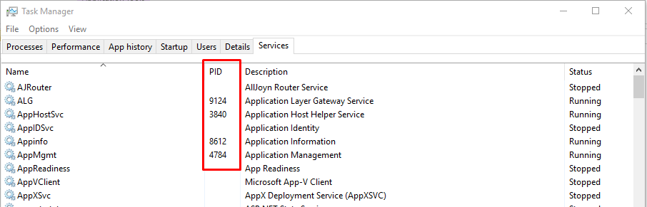

If you are unable to to stop and remove any service from windows task manager or service manager then you can use the following commands to stop and remove the service with command line.

after stop the process you can use the following command to remove the service from windows